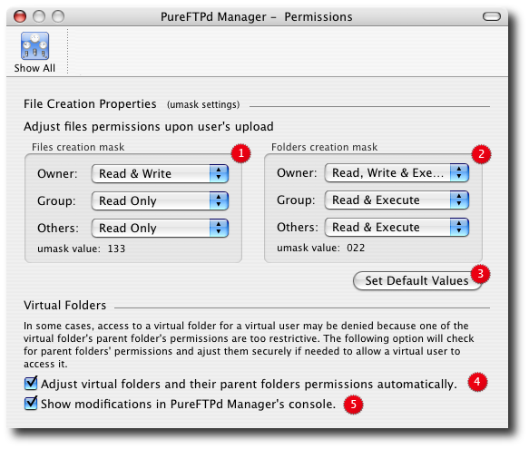
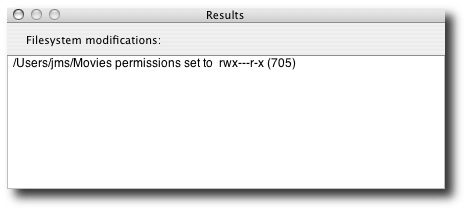

PureFTPd Manager - Permissions

The default is 133:022. If you want a new file uploaded by a user to only be readable by that user, use '177:077'. If you want uploaded files to be executable, use 022:022 (files will be readable -but not writable- by other users) or 077:077 (files will only be executable and readable by their owner). Please note that Pure-FTPd support the SITE CHMOD extension, so a user can change the permissions of his own files 3. Restore default (133:022) values. In some cases, access to a virtual folder for a virtual user may be denied because one of the virtual folder's parent folder's permissions are too restrictive. The following option will check for parent folders' permissions and ajust them securely if needed to allow a virtual user to access it.
5. Bring up a console to inform you what changes where committed to your filesystem

|